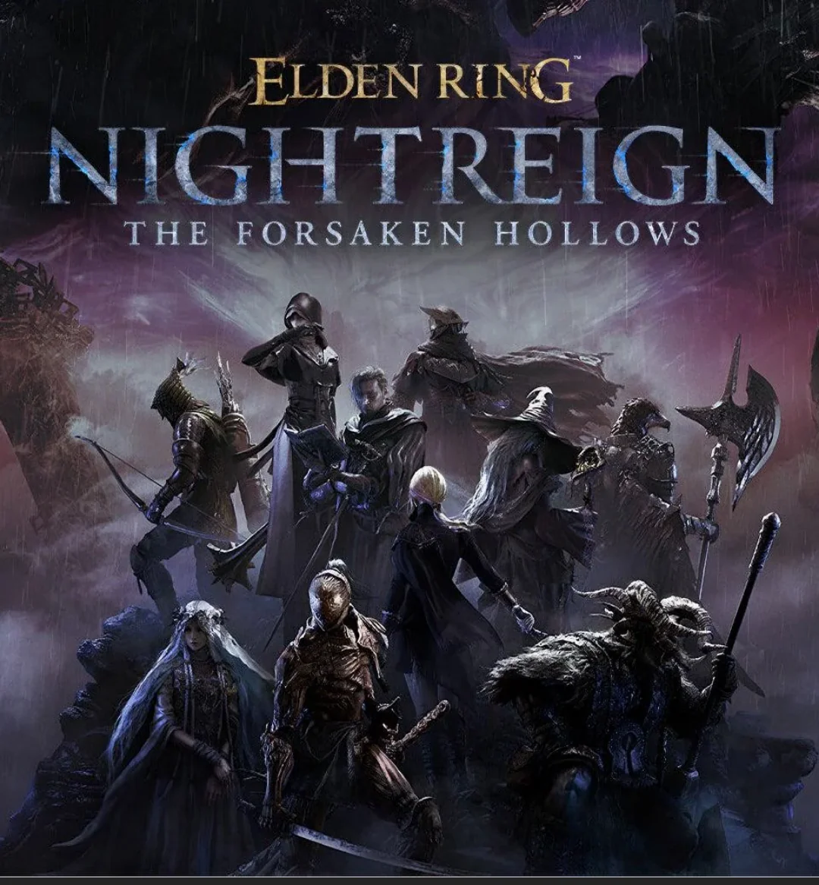

Day
Explore and Level Up
Land in Limveld and run it down: clear camps, claim churches and spend runes. Everything you find is temporary, so the only thing that carries forward is how fast you grow.
FromSoftware · Bandai Namco
Three days. Three Nightfarers. One Nightlord.
A standalone co-op survival action spin-off. Trios of Nightfarers drop into the shifting land of Limveld, outrun the closing Night's Tide for three in-game days, and face one of eight Nightlords on the final night.

The Expedition Loop
Every expedition is a compressed run: gather strength by daylight, survive what the night sends, and finally, stand against the Nightlord.
Day
Land in Limveld and run it down: clear camps, claim churches and spend runes. Everything you find is temporary, so the only thing that carries forward is how fast you grow.
Night
The ring of the Night's Tide contracts and squeezes the map. Whatever ground is left belongs to the night boss waiting at the centre of it.
Final Fight
On the third night, the expedition ends one way or the other: three Nightfarers against a single Nightlord, with no ground left to retreat into.
Runs last roughly forty minutes. Fall in battle and an ally can raise you — fall together means that the expedition is over.
Ten Playable Characters
Each expedition is fought by a trio. Every Nightfarer brings a different answer.
Select a Nightfarer for detailsThe Shifting Land
The same map, never the same run. Landmarks, spawns and terrain are rearranged for every expedition.
 Church · Flask upgrade
Fort · Guarded loot
Camp · Early runes
Church · Flask upgrade
Fort · Guarded loot
Camp · Early runes
Limveld is rebuilt between expeditions, so route planning matters more than memorising a map. A Shifting Earth event can remake a whole region — and with it, everything worth running toward.
The Third Night
Eight Nightlords preside over the night-tide, and an expedition only ever meets one of them. Two days of preparation are measured against a single fight: whatever the trio built in Limveld is all it will ever bring to the third night.
Survive the tide, or become part of it.
Watch
ELDEN RING NIGHTREIGN — trailer footage © FromSoftware / Bandai Namco Entertainment.
Expansion
The first expansion launched December 4, 2025, widening both the roster and the land itself.

Released December 4, 2025
Forsaken Hollows extends the same three-day loop rather than replacing it: new hands to play it with, new things waiting at the end of it, and new ground for it to happen on.
The Scholar and the Undertaker join the roster, bringing support and heavy strength-faith play to the trio.
Two further encounters to end an expedition on, for teams that have already learned the base game's nights.
A new Shifting Earth event that reshapes Limveld around a vast hollow, changing how a run is routed.